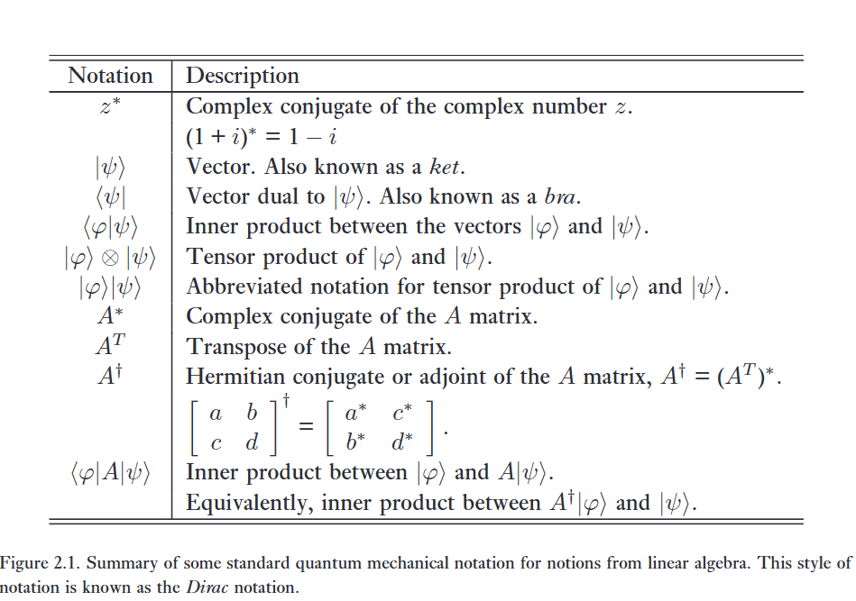
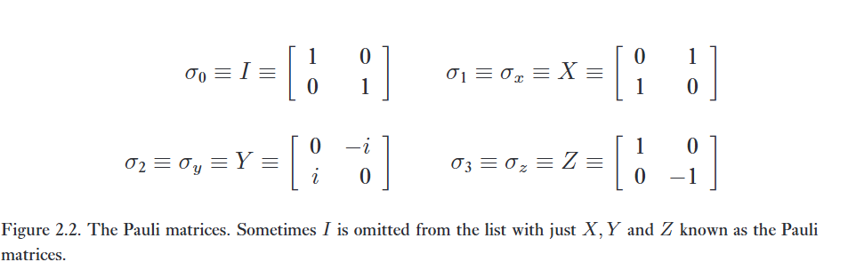

Linear algebra
‘This book is written as much to disturb and annoy as to instruct.’ – The first line of About Vectors, by Banesh Hoffmann.
‘Life is complex – it has both real and imaginary parts.’ – Anonymous
Đại số tuyến tính là ngành nghiên cứu về các không gian véc-tơ và các phép toán tuyến tính trên các không gian véc-tơ đó. Sự hiểu biết tốt về cơ học lượng tử dựa trên một nền tảng vững chắc về đại số tuyến tính sơ cấp. Trong mục này, chúng ta sẽ ôn tập một số khái niệm cơ bản từ đại số tuyến tính, đồng thời mô tả các ký hiệu chuẩn được sử dụng cho các khái niệm này trong việc nghiên cứu cơ học lượng tử. Các ký hiệu này được tóm tắt trong Hình 2.1 ở trang 62, với ký hiệu lượng tử ở cột bên trái và mô tả đại số tuyến tính ở cột bên phải. Bạn có thể xem lướt qua bảng đó và xem mình nhận ra bao nhiêu khái niệm ở cột bên phải.
Theo quan điểm của chúng tôi (chắc chắn là “tôi” ở đây là tác giả sách rồi), trở ngại chính trong việc tiếp thu các tiên đề của cơ học lượng tử không phải là bản thân các tiên đề, mà là khối lượng lớn các khái niệm đại số tuyến tính cần thiết để hiểu chúng. Kết hợp với ký hiệu Dirac bất thường được các nhà vật lý áp dụng cho cơ học lượng tử, nó có thể trông có vẻ (một cách sai lầm) khá đáng sợ. Vì những lý do này, chúng tôi khuyên độc giả chưa quen thuộc với cơ học lượng tử nên đọc lướt qua phần tài liệu tiếp theo, dừng lại chủ yếu để tập trung hiểu các nguyên tắc cơ bản tuyệt đối của ký hiệu đang được sử dụng. Sau đó, hãy tiến hành nghiên cứu cẩn thận chủ đề chính của chương – các tiên đề của cơ học lượng tử – rồi quay lại nghiên cứu sâu hơn về các khái niệm và ký hiệu đại số tuyến tính cần thiết khi cần thiết.
Các đối tượng cơ bản của đại số tuyến tính là vector spaces không gian véc-tơ. Không gian véc-tơ mà chúng ta quan tâm nhất là \mathbb{C}^n, không gian của tất cả các bộ n số phức, (z_1, \dots, z_n). Các phần tử của một không gian véc-tơ được gọi là véc-tơ (vectors), và đôi khi chúng ta sẽ sử dụng ký hiệu ma trận cột
\begin{bmatrix} z_1 \\ \vdots \\ z_n \end{bmatrix} \tag {2.1}
để chỉ một véc-tơ.
Có một phép toán cộng được định nghĩa, nhận các cặp véc-tơ và chuyển thành các véc-tơ khác. Trong \mathbb{C}^n, phép cộng véc-tơ được định nghĩa bởi
\begin{bmatrix} z_1 \\ \vdots \\ z_n \end{bmatrix} + \begin{bmatrix} z'_1 \\ \vdots \\ z'_n \end{bmatrix} \equiv \begin{bmatrix} z_1 + z'_1 \\ \vdots \\ z_n + z'_n \end{bmatrix} \tag {2.2}
trong đó các phép toán cộng ở vế phải chỉ là phép cộng số phức thông thường. Hơn nữa, trong một không gian véc-tơ còn có phép toán nhân với một vô hướng (multiplication by a scalar). Trong \mathbb{C}^n, phép toán này được định nghĩa bởi
z \begin{bmatrix} z_1 \\ \vdots \\ z_n \end{bmatrix} \equiv \begin{bmatrix} zz_1 \\ \vdots \\ zz_n \end{bmatrix} \tag {2.3}
trong đó z là một vô hướng, tức là một số phức, và các phép nhân ở vế phải là phép nhân số phức thông thường. Các nhà vật lý đôi khi gọi các số phức là c-numbers.
Cơ học lượng tử là động lực chính của chúng ta để nghiên cứu đại số tuyến tính, vì vậy chúng ta sẽ sử dụng ký hiệu chuẩn của cơ học lượng tử cho các khái niệm đại số tuyến tính. Ký hiệu cơ học lượng tử chuẩn cho một véc-tơ trong không gian véc-tơ là:
\vert{}\psi\rangle \quad (2.4)
\psi là một nhãn cho véc-tơ (mọi nhãn đều hợp lệ, mặc dù chúng ta thích sử dụng các nhãn đơn giản như \psi và \varphi). Ký hiệu \vert{}\cdot\rangle được sử dụng để chỉ ra rằng đối tượng là một véc-tơ. Toàn bộ đối tượng \vert{}\psi\rangle đôi khi được gọi là một ket, mặc dù chúng ta sẽ không sử dụng thuật ngữ đó thường xuyên.
Một không gian véc-tơ cũng chứa một véc-tơ không (zero vector) đặc biệt, mà chúng ta ký hiệu là 0. Nó thỏa mãn tính chất là đối với bất kỳ véc-tơ nào khác \vert{}v\rangle, \vert{}v\rangle + 0 = \vert{}v\rangle. Lưu ý rằng chúng ta không sử dụng ký hiệu ket cho véc-tơ không – đây là ngoại lệ duy nhất mà chúng ta sẽ thực hiện. Lý do tạo ra ngoại lệ này là vì theo quy ước, ký hiệu “hiển nhiên” cho véc-tơ không, \vert{}0\rangle, được dùng để chỉ một ý nghĩa hoàn toàn khác. Phép toán nhân vô hướng sao cho z0 = 0 với mọi số phức z. Để thuận tiện, chúng ta sử dụng ký hiệu (z_1, \dots, z_n) để biểu thị một ma trận cột có các phần tử z_1, \dots, z_n. Trong \mathbb{C}^n phần tử không là (0, 0, \dots, 0). Một không gian con véc-tơ (vector subspace) của một không gian véc-tơ V là một tập hợp con W của V sao cho W cũng là một không gian véc-tơ, nghĩa là, W phải đóng dưới phép nhân vô hướng và phép cộng.

1. Bases and linear independence
Một tập sinh (spanning set) cho một không gian véc-tơ là một tập hợp các véc-tơ \vert{}v_1\rangle, \dots, \vert{}v_n\rangle sao cho bất kỳ véc-tơ \vert{}v\rangle nào trong không gian véc-tơ đều có thể được viết dưới dạng tổ hợp tuyến tính \vert{}v\rangle = \sum_i a_i\vert{}v_i\rangle của các véc-tơ trong tập hợp đó.
Ví dụ, một tập sinh cho không gian véc-tơ \mathbb{C}^2 là tập hợp
\vert{}v_1\rangle \equiv \begin{bmatrix} 1 \\ 0 \end{bmatrix}; \quad \vert{}v_2\rangle \equiv \begin{bmatrix} 0 \\ 1 \end{bmatrix} \tag {2.5}
vì bất kỳ véc-tơ nào
\vert{}v\rangle = \begin{bmatrix} a_1 \\ a_2 \end{bmatrix} \tag {2.6}
trong \mathbb{C}^2 đều có thể được viết dưới dạng tổ hợp tuyến tính \vert{}v\rangle = a_1\vert{}v_1\rangle + a_2\vert{}v_2\rangle của các véc-tơ \vert{}v_1\rangle và \vert{}v_2\rangle. Chúng ta nói rằng các véc-tơ \vert{}v_1\rangle và \vert{}v_2\rangle sinh ra (span) không gian véc-tơ \mathbb{C}^2.
Nhìn chung, một không gian véc-tơ có thể có nhiều tập sinh khác nhau. Một tập sinh thứ hai cho không gian véc-tơ \mathbb{C}^2 là tập hợp
\vert{}v_1\rangle \equiv \frac{1}{\sqrt{2}}\begin{bmatrix} 1 \\ 1 \end{bmatrix}; \quad \vert{}v_2\rangle \equiv \frac{1}{\sqrt{2}}\begin{bmatrix} 1 \\ -1 \end{bmatrix} \tag {2.7}
vì một véc-tơ tùy ý \vert{}v\rangle = (a_1, a_2) có thể được viết dưới dạng tổ hợp tuyến tính của \vert{}v_1\rangle và \vert{}v_2\rangle:
\vert{}v\rangle = \frac{a_1 + a_2}{\sqrt{2}}\vert{}v_1\rangle + \frac{a_1 - a_2}{\sqrt{2}}\vert{}v_2\rangle \tag {2.8}
Một tập hợp các véc-tơ khác không \vert{}v_1\rangle, \dots, \vert{}v_n\rangle được gọi là phụ thuộc tuyến tính nếu tồn tại một tập hợp các số phức a_1, \dots, a_n với ít nhất một giá trị a_i \neq 0, sao cho:
a_1\vert{}v_1\rangle + a_2\vert{}v_2\rangle + \dots + a_n\vert{}v_n\rangle = 0 \tag {2.9}
Một tập hợp các véc-tơ được gọi là độc lập tuyến tính nếu nó không phụ thuộc tuyến tính.
Có thể chứng minh rằng bất kỳ hai tập hợp véc-tơ độc lập tuyến tính nào cùng sinh ra một không gian véc-tơ V đều chứa cùng một số lượng phần tử. Chúng ta gọi một tập hợp như vậy là một cơ sở cho V. Hơn nữa, một tập cơ sở như vậy luôn tồn tại. Số lượng phần tử trong cơ sở được định nghĩa là số chiều của V.
Trong cuốn sách này, chúng ta sẽ chỉ quan tâm đến các không gian véc-tơ hữu hạn chiều. Có nhiều câu hỏi thú vị và thường khó liên quan đến các không gian vô hạn chiều, nhưng chúng ta sẽ không cần phải bận tâm về những câu hỏi này.
Tìm hệ số a_1, a_2, a_3 sao cho:
a_1 (1, -1) + a_2 (1, 2) + a_3 (2, 1) = 0
\begin{cases} a_1 + a_2 + 2a_3 = 0 \\ -a_1 + 2a_2 + a_3 = 0 \end{cases}
Tập nghiệm là (-t, -t, t).
2. Linear operators and matrices
Một toán tử tuyến tính (linear operator) giữa các không gian véc-tơ V và W được định nghĩa là bất kỳ hàm số nào A: V \to W có tính tuyến tính đối với các đầu vào của nó:
A\left(\sum_i a_i\vert{}v_i\rangle\right) = \sum_i a_i A(\vert{}v_i\rangle) \quad (2.10)
Thông thường chúng ta chỉ viết A\vert{}v\rangle để ký hiệu cho A(\vert{}v\rangle). Khi chúng ta nói rằng một toán tử tuyến tính A được định nghĩa trên một không gian véc-tơ V, ý của chúng ta là A là một toán tử tuyến tính đi từ V đến V. Một toán tử tuyến tính quan trọng trên bất kỳ không gian véc-tơ V nào là toán tử đơn vị (identity operator), I_V, được định nghĩa bởi phương trình I_V\vert{}v\rangle \equiv \vert{}v\rangle với mọi véc-tơ \vert{}v\rangle. Ở những nơi không gây nhầm lẫn, chúng ta lược bỏ chỉ số dưới V và chỉ viết I để ký hiệu toán tử đơn vị. Một toán tử tuyến tính quan trọng khác là toán tử không (zero operator), mà chúng ta ký hiệu là 0. Toán tử không ánh xạ mọi véc-tơ thành véc-tơ không, 0\vert{}v\rangle \equiv 0. Rõ ràng từ phương trình (2.10) rằng một khi tác động của toán tử tuyến tính A lên một cơ sở được xác định, tác động của A sẽ được xác định hoàn toàn trên mọi đầu vào.
Giả sử V, W, và X là các không gian véc-tơ, và A: V \to W cùng với B: W \to X là các toán tử tuyến tính. Khi đó chúng ta sử dụng ký hiệu BA để ký hiệu phép hợp thành (composition) của B với A, được định nghĩa bởi (BA)(\vert{}v\rangle) \equiv B(A(\vert{}v\rangle)). Một lần nữa, chúng ta viết BA\vert{}v\rangle như một dạng viết tắt cho (BA)(\vert{}v\rangle).
Cách thuận tiện nhất để hiểu các toán tử tuyến tính là thông qua biểu diễn ma trận (matrix representations) của chúng. Trên thực tế, quan điểm về toán tử tuyến tính và quan điểm về ma trận hóa ra hoàn toàn tương đương. Tuy nhiên, quan điểm ma trận có thể quen thuộc hơn với bạn. Để thấy được mối liên hệ này, trước hết cần hiểu rằng một ma trận phức m \times n với các phần tử A_{ij} thực chất là một toán tử tuyến tính gửi các véc-tơ trong không gian véc-tơ \mathbb{C}^n đến không gian véc-tơ \mathbb{C}^m, dưới phép nhân ma trận của ma trận A với một véc-tơ trong \mathbb{C}^n. Chính xác hơn, khẳng định rằng ma trận A là một toán tử tuyến tính có nghĩa là
A\left(\sum_i a_i\vert{}v_i\rangle\right) = \sum_i a_i A\vert{}v_i\rangle \quad (2.11)
đúng là một phương trình trong đó phép toán là phép nhân ma trận của A với các véc-tơ cột. Rõ ràng, điều này là đúng!
Chúng ta đã thấy rằng các ma trận có thể được coi là các toán tử tuyến tính. Liệu các toán tử tuyến tính có thể được biểu diễn dưới dạng ma trận không? Thực tế là có, như chúng ta sẽ giải thích ngay sau đây. Sự tương đương giữa hai quan điểm này biện minh cho việc chúng ta thay thế cho nhau các thuật ngữ từ lý thuyết ma trận và lý thuyết toán tử xuyên suốt cuốn sách. Giả sử A: V \to W là một toán tử tuyến tính giữa các không gian véc-tơ V và W. Giả sử \vert{}v_1\rangle, \dots, \vert{}v_m\rangle là một cơ sở cho V và \vert{}w_1\rangle, \dots, \vert{}w_n\rangle là một cơ sở cho W. Khi đó với mỗi j trong khoảng 1, \dots, m, tồn tại các số phức A_{1j} thông qua A_{nj} sao cho
A\vert{}v_j\rangle = \sum_t A_{tj}\vert{}w_t\rangle \quad (2.12)
Ma trận có các phần tử là các giá trị A_{tj} được gọi là tạo thành một biểu diễn ma trận của toán tử A. Biểu diễn ma trận này của A hoàn toàn tương đương với toán tử A, và chúng ta sẽ sử dụng thay thế cho nhau giữa biểu diễn ma trận và quan điểm toán tử trừu tượng. Lưu ý rằng để thiết lập mối liên hệ giữa ma trận và toán tử tuyến tính, chúng ta phải chỉ định một tập hợp các trạng thái cơ sở đầu vào và đầu ra cho các không gian véc-tơ đầu vào và đầu ra của toán tử tuyến tính
Giả sử V là một không gian véc-tơ với các véc-tơ cơ sở \vert{}0\rangle và \vert{}1\rangle, và A là một toán tử tuyến tính từ V đến V sao cho A\vert{}0\rangle = \vert{}1\rangle và A\vert{}1\rangle = \vert{}0\rangle. Hãy đưa ra biểu diễn ma trận cho A, đối với cơ sở đầu vào \vert{}0\rangle, \vert{}1\rangle và cơ sở đầu ra \vert{}0\rangle, \vert{}1\rangle. Tìm các cơ sở đầu vào và đầu ra sinh ra một biểu diễn ma trận khác của A.
Giả sử A là một toán tử tuyến tính từ không gian véc-tơ V đến không gian véc-tơ W, và B là một toán tử tuyến tính từ không gian véc-tơ W đến không gian véc-tơ X. Gọi \vert{}v_i\rangle, \vert{}w_j\rangle, và \vert{}x_k\rangle lần lượt là các cơ sở cho các không gian véc-tơ V, W, và X. Chứng minh rằng biểu diễn ma trận cho phép biến đổi tuyến tính BA chính là tích ma trận của các biểu diễn ma trận cho B và A, đối với các cơ sở phù hợp.
Chứng minh rằng toán tử đơn vị trên một không gian véc-tơ V có biểu diễn ma trận với các giá trị bằng 1 ở đường chéo chính và bằng 0 ở tất cả các vị trí khác, nếu biểu diễn ma trận đó được tính toán đối với cùng một bộ cơ sở đầu vào và đầu ra. Ma trận này được gọi là ma trận đơn vị (identity matrix).
3. The Pauli matrices
Bốn ma trận cực kỳ hữu ích mà chúng ta sẽ thường xuyên có dịp sử dụng là các ma trận Pauli.
Đây là các ma trận kích thước 2 \times 2, được ký hiệu bằng nhiều cách khác nhau. Các ma trận này và các ký hiệu tương ứng được thể hiện trong Hình 2.2. Các ma trận Pauli rất hữu ích trong việc nghiên cứu tính toán lượng tử và thông tin lượng tử đến mức chúng ta được khuyến khích ghi nhớ chúng thông qua việc làm chi tiết các ví dụ và bài tập dựa trên chúng ở các mục tiếp theo.

4. Inner products
Trong quantum mechanics, trạng thái của môtj qubit hay hệ lượng tử nằm trong không gian n-chiều phức \mathbb C^n, khá là trừu tượng, khá là phản trực giác.
Vì vậy người ta sử dụng tích trong để trả lời 3 thứ:
Norm: tính độ dài, trạng thái lượng tử này có chuẩn hóa hợp lệ không (tổng xác suất có bằng 100% hay không)?
Overlapping: Hai trạng thái lượng tử giống nhau đến mức nào?
Orthorgonality: Hai trạng thái có trực giao hay không? Hai trạng thái có hoàn toàn phân biệt được bằng phép đo hay không? (tức là tích trong bằng 0).
Đầu vào sẽ là 2 vector bất kỳ, ví dụ như là ket psi hay ket varphi.
Đầu ra cho duy nhất 1 số phức.
Cú pháp:
Tích trong ket v và ket w là: \langle v \vert w \rangle.
Một tích trong là một hàm số nhận đầu vào là hai vector \vert v \rangle và \vert w \rangle từ một không gian vector và cho đầu ra là một số phức. Hiện tại, sẽ thuận tiện khi viết tích trong của \vert v \rangle và \vert w\rangle dưới dạng (\vert v \rangle, \vert w\rangle). Đây không phải là ký hiệu cơ học lượng tử chuẩn; vì sự rõ ràng trong sư phạm, ký hiệu (\cdot, \cdot) sẽ đôi khi hữu ích trong chương này.
Ký hiệu cơ học lượng tử chuẩn cho tích trong (\vert{}v\rangle, \vert{}w\rangle) là \langle v\vert{}w\rangle, trong đó \vert{}v\rangle và \vert{}w\rangle là các véc-tơ trong không gian tích trong, và ký hiệu \langle v\vert{} được sử dụng cho véc-tơ đối ngẫu (dual vector) với véc-tơ \vert{}v\rangle; véc-tơ đối ngẫu là một toán tử tuyến tính từ không gian tích trong V đến tập hợp các số phức \mathbb{C}, được định nghĩa bởi \langle v\vert{}(\vert{}w\rangle) \equiv \langle v\vert{}w\rangle \equiv (\vert{}v\rangle, \vert{}w\rangle). Chúng ta sẽ sớm thấy rằng biểu diễn ma trận của các véc-tơ đối ngẫu chính là một véc-tơ hàng.
Một hàm số (\cdot, \cdot) từ V \times V đến \mathbb{C} là một tích trong nếu nó thỏa mãn các yêu cầu sau:
- (\cdot, \cdot) có tính tuyến tính ở đối số thứ hai:
(\vert{}v\rangle, \sum_i \lambda_i\vert{}w_i\rangle) = \sum_i \lambda_i (\vert{}v\rangle, \vert{}w_i\rangle) \tag {2.13}
(\vert{}v\rangle, \vert{}w\rangle) = (\vert{}w\rangle, \vert{}v\rangle)^*.
(\vert{}v\rangle, \vert{}v\rangle) \ge 0 với dấu bằng xảy ra khi và chỉ khi \vert{}v\rangle = 0.
Ví dụ, không gian \mathbb{C}^n có một tích trong được định nghĩa bởi
((y_1, \dots, y_n), (z_1, \dots, z_n)) \equiv \sum_i y_i^* z_i = \begin{bmatrix} y_1^* & \dots & y_n^* \end{bmatrix} \begin{bmatrix} z_1 \\ \vdots \\ z_n \end{bmatrix} \tag {2.14}
Chúng ta gọi một không gian véc-tơ được trang bị một tích trong là một không gian tích trong (inner product space).
Xác minh rằng (\cdot, \cdot) vừa được định nghĩa thực sự là một tích trong trên \mathbb{C}^n.
Chứng minh rằng bất kỳ tích trong (\cdot, \cdot) nào cũng có tính tuyến tính liên hợp (conjugate-linear) ở đối số thứ nhất: (\sum_i \lambda_i \vert{}w_i\rangle, \vert{}v\rangle) = \sum_i \lambda_i^* (\vert{}w_i\rangle, \vert{}v\rangle) \tag {2.15}
Hilbert space yapping
Các cuộc thảo luận về cơ học lượng tử thường nhắc đến không gian Hilbert. Trong các không gian véc-tơ phức hữu hạn chiều xuất hiện trong tính toán và thông tin lượng tử, không gian Hilbert hoàn toàn đồng nhất với không gian tích trong. Kể từ bây giờ, chúng ta sử dụng hai thuật ngữ này thay thế cho nhau, ưu tiên dùng thuật ngữ không gian Hilbert. Đối với không gian vô hạn chiều, không gian Hilbert thỏa mãn các giới hạn kỹ thuật bổ sung vượt ra ngoài không gian tích trong, điều mà chúng ta không cần phải bận tâm.
Các véc-tơ \vert{}w\rangle và \vert{}v\rangle được gọi là trực giao nếu tích trong của chúng bằng không. Ví dụ, \vert{}w\rangle \equiv (1, 0) và \vert{}v\rangle \equiv (0, 1) là trực giao đối với tích trong được định nghĩa bởi phương trình (2.14).
Chúng ta định nghĩa chuẩn của một véc-tơ \vert{}v\rangle bởi:
\Vert{} \vert{}v\rangle \Vert{} \equiv \sqrt{\langle v\vert{}v\rangle} \quad (2.16)
Một véc-tơ đơn vị là một véc-tơ \vert{}v\rangle sao cho \Vert{} \vert{}v\rangle \Vert{} = 1. Ta cũng nói rằng \vert{}v\rangle được chuẩn hóa nếu \Vert{} \vert{}v\rangle \Vert{} = 1. Thật tiện lợi khi nói đến việc chuẩn hóa một véc-tơ bằng cách chia nó cho chuẩn của chính nó; do đó \vert{}v\rangle / \Vert{} \vert{}v\rangle \Vert{} là dạng chuẩn hóa của \vert{}v\rangle, với mọi véc-tơ khác không \vert{}v\rangle.
Một tập hợp các véc-tơ \vert{}i\rangle với chỉ số i được gọi là trực chuẩn nếu mỗi véc-tơ là véc-tơ đơn vị, và các véc-tơ phân biệt trong tập hợp là trực giao với nhau, tức là \langle i\vert{}j \rangle = \delta_{ij}, trong đó cả i và j đều được chọn từ tập chỉ số.
Chứng minh rằng \vert w \rangle = (1, 1) và \vert v \rangle = (1, -1) là trực chuẩn. Và dạng chuẩn hóa của nó là gì?
Tính:
\langle w \vert = \vert w \rangle ^ \dagger = (w_1^\dagger \ w_2^\dagger)
\langle w \vert v \rangle = \vert w \rangle^\dagger \vert v \rangle = 0
vậy nó trực chuẩn.
Tìm dạng chuẩn hóa: \text{norm}(\vert w \rangle) = \frac{\vert w \rangle} {\Vert{} \vert{}w\rangle \Vert{}} = \frac 1 {\sqrt 2} (1, 1)
\text{norm}(\vert v \rangle) = \frac{\vert v \rangle} {\Vert{} \vert{}v\rangle \Vert{}} = \frac 1 {\sqrt 2} (1, -1)
Gram-Schmidt procedure
Giả sử \vert{}w_1\rangle, \dots, \vert{}w_d\rangle là một tập cơ sở cho một không gian véc-tơ V có trang bị tích trong. Có một phương pháp hữu ích là thủ tục Gram-Schmidt, có thể được dùng để tạo ra một tập cơ sở trực chuẩn \vert{}v_1\rangle, \dots, \vert{}v_d\rangle cho không gian véc-tơ V. Định nghĩa \vert{}v_1\rangle \equiv \vert{}w_1\rangle / \Vert{} \vert{}w_1\rangle \Vert{}, và với 1 \le k \le d-1, định nghĩa \vert{}v_{k+1}\rangle một cách quy nạp bởi:
\vert{}v_{k+1}\rangle \equiv \frac{\vert{}w_{k+1}\rangle - \sum_{t=1}^k \langle v_t \vert{} w_{k+1} \rangle \vert{}v_t\rangle}{\Vert{} \vert{}w_{k+1}\rangle - \sum_{t=1}^k \langle v_t \vert{} w_{k+1} \rangle \vert{}v_t\rangle \Vert{}} \tag {2.17}
Không khó để xác minh rằng các véc-tơ \vert{}v_1\rangle, \dots, \vert{}v_d\rangle tạo thành một tập trực chuẩn đồng thời cũng là một cơ sở cho V. Do đó, bất kỳ không gian véc-tơ hữu hạn chiều nào có số chiều d đều có một cơ sở trực chuẩn \vert{}v_1\rangle, \dots, \vert{}v_d\rangle.
Chứng minh rằng phương pháp Gram–Schmidt tạo ra một cơ sở trực chuẩn cho V.
Kể từ bây giờ, khi nói đến biểu diễn ma trận của một toán tử tuyến tính, chúng ta có ý nói đến biểu diễn ma trận đối với các cơ sở đầu vào và đầu ra trực chuẩn.
Chúng ta cũng sử dụng quy ước rằng nếu không gian đầu vào và đầu ra của một toán tử tuyến tính giống nhau, thì các cơ sở đầu vào và đầu ra cũng giống nhau, trừ khi có ghi chú khác.
Với những quy ước này, tích trong trên một không gian Hilbert có thể được đưa ra một biểu diễn ma trận thuận tiện. Gọi \vert{}w\rangle = \sum_i w_i\vert{}i\rangle và \vert{}v\rangle = \sum_j v_j\vert{}j\rangle là biểu diễn của các véc-tơ \vert{}w\rangle và \vert{}v\rangle đối với một cơ sở trực chuẩn \vert{}i\rangle. Khi đó, vì \langle i\vert{}j\rangle = \delta_{ij}, ta có:
\langle v\vert{}w\rangle = \left( \sum_i v_i\vert{}i\rangle, \sum_j w_j\vert{}j\rangle \right) = \sum_{ij} v_i^* w_j \delta_{ij} = \sum_i v_i^* w_i \tag{2.18}
= \begin{bmatrix} v_1^* & \dots & v_n^* \end{bmatrix} \begin{bmatrix} w_1 \\ \vdots \\ w_n \end{bmatrix} \tag{2.19}
Tức là, tích trong của hai véc-tơ bằng với tích trong véc-tơ giữa hai biểu diễn ma trận của các véc-tơ đó, miễn là các biểu diễn được viết đối với cùng một cơ sở trực chuẩn. Chúng ta cũng thấy rằng véc-tơ đối ngẫu \langle v\vert{} có một diễn giải rất đẹp là véc-tơ hàng mà các thành phần của nó là số phức liên hợp của các thành phần tương ứng của biểu diễn véc-tơ cột của \vert{}v\rangle.
Outer product representation
Tồn tại một cách hữu ích để biểu diễn các toán tử tuyến tính bằng cách sử dụng tích trong, được gọi là outer product representation biểu diễn tích ngoài.
Giả sử \vert{}v\rangle là một véc-tơ trong không gian tích trong V, và \vert{}w\rangle là một véc-tơ trong không gian tích trong W. Định nghĩa \vert{}w\rangle\langle v\vert{} là toán tử tuyến tính từ V đến W có tác động được định nghĩa bởi:
(\vert{}w\rangle\langle v\vert{})(\vert{}v'\rangle) \equiv \vert{}w\rangle\langle v\vert{}v'\rangle = \langle v\vert{}v'\rangle \vert{}w\rangle \tag {2.20}
Phương trình này khớp một cách tuyệt đẹp vào các quy ước ký hiệu của chúng ta, theo đó biểu thức \vert{}w\rangle\langle v\vert{}v'\rangle có thể có một trong hai nghĩa: chúng ta sẽ dùng nó để chỉ kết quả khi toán tử \vert{}w\rangle\langle v\vert{} tác động lên \vert{}v'\rangle, và nó có một diễn giải sẵn có là kết quả của phép nhân véc-tơ \vert{}w\rangle với số phức \langle v\vert{}v'\rangle. Các định nghĩa của chúng ta được chọn sao cho hai ý nghĩa tiềm năng này trùng khớp với nhau. Quả thực, chúng ta định nghĩa ý nghĩa thứ nhất thông qua ý nghĩa thứ hai!
Completeness Relation
Chúng ta có thể lấy các tổ hợp tuyến tính của các toán tử tích ngoài \vert{}w\rangle\langle v\vert{} một cách trực quan. Theo định nghĩa, \sum_i a_i\vert{}w_i\rangle\langle v_i\vert{} là toán tử tuyến tính mà khi tác động lên \vert{}v'\rangle, sẽ tạo ra \sum_i a_i\vert{}w_i\rangle\langle v_i\vert{}v'\rangle làm đầu ra.
Tính hữu ích của ký hiệu tích ngoài có thể nhận thấy từ một kết quả quan trọng được gọi là hệ thức đầy đủ (completeness relation) cho các véc-tơ trực chuẩn. Gọi \vert{}i\rangle là bất kỳ cơ sở trực chuẩn nào cho không gian véc-tơ V, sao cho một véc-tơ tùy ý \vert{}v\rangle có thể được viết là \vert{}v\rangle = \sum_i v_i\vert{}i\rangle với một tập hợp các số phức v_i. Lưu ý rằng \langle i\vert{}v\rangle = v_i và do đó
\left( \sum_i \vert{}i\rangle\langle i\vert{} \right) \vert{}v\rangle = \sum_i \vert{}i\rangle\langle i\vert{}v\rangle = \sum_i v_i\vert{}i\rangle = \vert{}v\rangle \tag {2.21}
Vì phương trình cuối cùng đúng với mọi véc-tơ \vert{}v\rangle, suy ra rằng
\sum_i \vert{}i\rangle\langle i\vert{} = I \tag {2.22}
Phương trình này được gọi là completeness relation hệ thức đầy đủ.
\langle OPR \vert CR \rangle
Một ứng dụng của hệ thức đầy đủ là cung cấp một phương tiện để biểu diễn bất kỳ toán tử nào dưới ký hiệu tích ngoài. Giả sử A : V \to W là một toán tử tuyến tính, \vert{}v_i\rangle là một cơ sở trực chuẩn cho V, và \vert{}w_j\rangle là một cơ sở trực chuẩn cho W. Sử dụng hệ thức đầy đủ hai lần, ta thu được
A = I_W A I_V \tag {2.23}
= \sum_{ij} \vert{}w_j\rangle \langle w_j\vert{}A\vert{}v_i\rangle \langle v_i\vert{} \tag {2.24}
= \sum_{ij} \langle w_j\vert{}A\vert{}v_i\rangle \vert{}w_j\rangle\langle v_i\vert{} \tag {2.25}
đó chính là biểu diễn tích ngoài cho A. Chúng ta cũng thấy từ phương trình này rằng A có phần tử ma trận \langle w_j\vert{}A\vert{}v_i\rangle ở cột thứ i và hàng thứ j, đối với cơ sở đầu vào \vert{}v_i\rangle và cơ sở đầu ra \vert{}w_j\rangle.
Một ứng dụng thứ hai minh họa tính hữu ích của hệ thức đầy đủ là bất đẳng thức Cauchy-Schwarz. Kết quả quan trọng này được thảo luận trong Hộp 2.1 ở trang này.
Các ma trận Pauli (Hình 2.2 ở trang 65) có thể được coi là các toán tử đối với một cơ sở trực chuẩn \vert{}0\rangle, \vert{}1\rangle cho một không gian Hilbert hai chiều. Hãy biểu diễn mỗi toán tử Pauli dưới ký hiệu tích ngoài.
Giả sử \vert{}v_i\rangle là một cơ sở trực chuẩn cho không gian tích trong V. Biểu diễn ma trận cho toán tử \vert{}v_j\rangle\langle v_k\vert{} đối với cơ sở \vert{}v_i\rangle là gì?
Bất đẳng thức Cauchy-Schwarz là một yếu tố quan trọng về không gian Hilbert.
Nó khẳng định rằng với bất kỳ 2 vector \vert v\rangle và \vert w\rangle nào, \vert \langle v \vert w \rangle \vert ^2 \leq \langle v \vert v \rangle \langle w \vert w \rangle
5. Eigenvectors and eigenvalues
Một eigenvector vector riêng của một toán tử tuyến tính A trên một không gian vector là một vector \vert v \rangle sao cho \vert v\rangle \neq 0 và A\vert v \rangle = v\vert v \rangle, trong đó v là một số phức được gọi là eigenvalue của A tương ứng với \vert v \rangle.
Cách tính eigenvalue và eigenvector, thông qua hàm đặc trưng:
c(\lambda) \equiv \det \vert {A - \lambda I} \vert
trong đó, det là hàm định thức cho ma trận. Có thể chứng minh rằng hàm đặc trưng chỉ phụ thuộc vào toán tử A chứ không phụ thuộc vào biểu diễn ma trận cụ thể được sử dụng cho A.
Các nghiệm của phương trình đặc trưng c(\lambda) = 0 chính là các eigenvalue của toán tử A. Theo định lý cơ bản của đại số, mọi đa thức đều có ít nhất một nghiệm phức, vì vậy mọi toán tử A đều có ít nhất một eigenvalue và eigenvector tương ứng.
Eigenspace Không gian riêng tương ứng với eigenvalue là v, là tập hợp các vector có eigenvalue là v. Nó là một không gian con vector của không gian vector mà A tác động lên.
Diagonal representation
Một diagonal representation biểu diễn đường chéo cho một toán tử A trên không gian vector V là một biểu diễn
A = \sum_i \lambda_i \vert i \rangle \langle i \vert
, trong đó các vector \vert i \rangle tạo thành một tập trực chuẩn các eigenvector của A, với các eigenvalue tương ứng \lambda_i. Một toán tử được gọi là diagonalizable chéo hóa được nếu nó có một biểu diễn đường chéo. Trong mục tiếp theo, ta sẽ tìm một tập hợp các điều kiện cần và đủ đơn giản để một toán tử trên không gian Hilbert chéo hóa được.
Như một ví dụ về biểu diễn đường chéo, lưu ý rằng ma trận Pauli-Z có thể viết được dưới dạng:
Z = \begin{bmatrix} 1 & 0 \\ 0 & -1 \end{bmatrix} = \vert 0 \rangle \langle 0 \vert - \vert 1 \rangle \langle 1 \vert \tag {2.29}
trong đó biểu diễn ma trận là đối với các vector trực chuẩn lần lượt là \vert 0 \rangle và \vert 1 \rangle. Các biểu diễn đường chéo đôi khi còn được gọi là orthonormal decompositions phân tích trực chuẩn.
Degenerate
Khi một eigenspace có số chiều lớn hơn 1, chúng ta nói rằng nó suy biến. Ví dụ, ma trận A được định nghĩa bởi:
A \equiv \begin{bmatrix} 2 & 0 & 0 \\ 0 & 2 & 0 \\ 0 & 0 & 0 \end{bmatrix} \tag {2.30}
có một eigenspace hai chiều tương ứng với eigenvalue 2. Các eigenvector (1, 0, 0) và (0, 1, 0) được gọi là suy biến vì chúng là các eigenvector độc lập tuyến tính của A có cùng eigenvalue.
Tìm các eigenvector, eigenvalue, và biểu diễn đường chéo của các ma trận Pauli X, Y, và Z.
Biểu diễn chéo hóa của Pauli-X:
X = \begin{bmatrix} 0 & 1 \\ 1 & 0 \end{bmatrix}
Tính eignevalue:
\det(X - \lambda I) = 0 \\ \left|\begin{bmatrix} 0 & 1 \\ 1 & 0 \end{bmatrix} - \lambda \begin{bmatrix} 1 & 0 \\ 0 & 1 \end{bmatrix} \right| = 0 \\ \left|\begin{bmatrix} -\lambda & 1 \\ 1 & -\lambda \end{bmatrix} \right| = 0 \\ \lambda^2 = 1
Vậy \lambda = \pm 1.
Xét eigenvalue = 1, tìm eigenvector tương ứng:
(X - \lambda I) \vert v \rangle = \theta \\ \left(\begin{bmatrix}0 & 1 \\ 1 & 0 \end{bmatrix} - \begin{bmatrix} 1 & 0 \\ 0 & 1 \end{bmatrix} \right) \begin{bmatrix} a \\ b \end{bmatrix} = \begin{bmatrix} 0 \\ 0 \end{bmatrix} \\ \begin{bmatrix} -1 & 1 \\ 1 & -1 \end{bmatrix}\begin{bmatrix} a \\ b \end{bmatrix} = \begin{bmatrix} 0 \\ 0 \end{bmatrix} \\ \begin{bmatrix} -a + b \\ a - b \end{bmatrix} = \begin{bmatrix} 0 \\ 0 \end{bmatrix}
Hay a = b. Từ đó ta tìm được eigenvector là:
\begin{bmatrix} a \\ a \end{bmatrix} = a \begin{bmatrix} 1 \\ 1 \end{bmatrix}
chuẩn hóa eigenvector, ta được:
\text{norm}\left(a \begin{bmatrix} 1 \\ 1 \end{bmatrix}\right) = \frac a {\sqrt 2} \begin{bmatrix} 1 \\ 1 \end{bmatrix}
chúng ta có thể bỏ mọe thằng a đi cũng được, chỉ giữ lại mấy cái sau thôi, và có thể phân tích được vector cột 1 1 thành như sau:
\frac {1} {\sqrt 2} \begin{bmatrix} 1 \\ 1 \end{bmatrix} = \frac 1 {\sqrt 2} \left(\begin{bmatrix} 1 \\ 0 \end{bmatrix} + \begin{bmatrix} 0 \\ 1 \end{bmatrix} \right) = \frac 1 {\sqrt 2} (\vert 0 \rangle + \vert 1 \rangle) = \vert + \rangle
vậy, eigenvector của pauli-x ứng với eigenvalue 1 là \vert + \rangle.
Tính tương tự với eigenvalue -1, ta tìm được eigenvalue \vert - \rangle.
Tổng hợp lại, ta có thể biểu diễn chéo hóa của pauli-x như sau:
X = \vert + \rangle \langle + \vert - \vert - \rangle \langle-\vert
Qua đó cũng có thể bình luận thêm là pauli-x là diagonalizable.
Chứng minh rằng ma trận
\begin{bmatrix} 1 & 0 \\ 1 & 1 \end{bmatrix} \tag {2.31}
không chéo hóa được.
6. Adjoints and Hermitian operators
Adjoint (Hermitian conjugate)
Giả sử A là một toán tử tuyến tính bất kỳ trên không gian Hilbert V. Hóa ra tồn tại duy nhất một toán tử tuyến tính A^\dagger trên V sao cho với mọi véc-tơ \vert{}v\rangle, \vert{}w\rangle \in V,
(\vert{}v\rangle, A\vert{}w\rangle) = (A^\dagger\vert{}v\rangle, \vert{}w\rangle) \tag {2.32}
Toán tử tuyến tính này được gọi là adjoint toán tử liên hợp hoặc Hermitian conjugate liên hợp Hermitian của toán tử A. Từ định nghĩa, dễ dàng thấy rằng (AB)^\dagger = B^\dagger A^\dagger. Theo quy ước, nếu \vert{}v\rangle là một véc-tơ, thì chúng ta định nghĩa \vert{}v\rangle^\dagger \equiv \langle v\vert{}. Với định nghĩa này, không khó để thấy rằng (A\vert{}v\rangle)^\dagger = \langle v\vert{}A^\dagger.
Nếu \vert{}w\rangle và \vert{}v\rangle là hai véc-tơ bất kỳ, hãy chứng minh rằng (\vert{}w\rangle\langle v\vert{})^\dagger = \vert{}v\rangle\langle w\vert{}.
Chứng minh rằng phép toán lấy liên hợp phụ hợp có tính phản tuyến tính (anti-linear):
\left( \sum_i a_i A_i \right)^\dagger = \sum_i a_i^* A_i^\dagger \tag {2.33}
Chứng minh rằng (A^\dagger)^\dagger = A.
Hermitian operator (Self-adjoint operator)
Trong biểu diễn ma trận của một toán tử A, tác động của phép toán liên hợp Hermitian là biến ma trận của A thành ma trận chuyển vị liên hợp phức, A^\dagger \equiv (A^*)^T, trong đó dấu * chỉ phép liên hợp phức, và T chỉ phép chuyển vị. Ví dụ, chúng ta có:
\begin{bmatrix} 1+3i & 2i \\ 1+i & 1-4i \end{bmatrix}^\dagger = \begin{bmatrix} 1-3i & 1-i \\ -2i & 1+4i \end{bmatrix} \tag {2.34}
Một toán tử A có liên hợp chính là A được gọi là Hermitian operator một toán tử Hermitian hoặc self-adjoint operator tự liên hợp.
Projectors
Một lớp toán tử Hermitian quan trọng là các toán tử projectors chiếu. Giả sử W là một không gian con véc-tơ k-chiều của không gian véc-tơ d-chiều V. Sử dụng thủ tục Gram–Schmidt, ta có thể dựng một cơ sở trực chuẩn \vert{}1\rangle, \dots, \vert{}d\rangle cho V sao cho \vert{}1\rangle, \dots, \vert{}k\rangle là một cơ sở trực chuẩn cho W. Theo định nghĩa,
P \equiv \sum_{i=1}^k \vert{}i\rangle\langle i\vert{} \tag {2.35}
là toán tử chiếu lên không gian con W. Dễ dàng kiểm tra rằng định nghĩa này không phụ thuộc vào cơ sở trực chuẩn \vert{}1\rangle, \dots, \vert{}k\rangle được sử dụng cho W. Từ định nghĩa, có thể chứng minh rằng \vert{}v\rangle\langle v\vert{} là Hermitian với bất kỳ véc-tơ \vert{}v\rangle nào, do đó P là Hermitian, P^\dagger = P. Chúng ta sẽ thường gọi “không gian véc-tơ P” như một cách viết tắt cho không gian véc-tơ mà P chiếu lên. Phần bù trực giao của P là toán tử Q \equiv I - P. Dễ thấy rằng Q là một toán tử chiếu lên không gian véc-tơ sinh bởi \vert{}k+1\rangle, \dots, \vert{}d\rangle, mà chúng ta cũng gọi là phần bù trực giao của P, và có thể ký hiệu là Q.
Chứng minh rằng bất kỳ toán tử chiếu P nào cũng thỏa mãn phương trình P^2 = P.
Normal
Một toán tử A được gọi là normal chuẩn tắc nếu AA^\dagger = A^\dagger A. Rõ ràng, một toán tử Hermitian thì cũng là chuẩn tắc. Tồn tại một định lý biểu diễn đáng chú ý cho các toán tử chuẩn tắc được gọi là spectral decomposition phân tích phổ, khẳng định rằng một toán tử là chuẩn tắc khi và chỉ khi nó chéo hóa được. Kết quả này được chứng minh trong Hộp 2.2 ở trang 72, mà bạn nên đọc kỹ.
Chứng minh rằng một ma trận chuẩn tắc là Hermitian khi và chỉ khi tất cả các giá trị riêng của nó đều là số thực.
Unitary
Một ma trận U được gọi là unitary trực giao phức nếu U^\dagger U = I. Tương tự, một toán tử U được gọi là unitary nếu U^\dagger U = I. Dễ dàng kiểm tra rằng một toán tử là unitary khi và chỉ khi mỗi biểu diễn ma trận của nó là unitary. Một toán tử unitary cũng thỏa mãn U U^\dagger = I, và do đó U là toán tử chuẩn tắc và có phân tích phổ. Về mặt hình học, các toán tử unitary có vai trò quan trọng vì chúng bảo toàn tích trong giữa các véc-tơ. Để thấy điều này, gọi \vert{}v\rangle và \vert{}w\rangle là hai véc-tơ bất kỳ. Khi đó tích trong của U\vert{}v\rangle và U\vert{}w\rangle bằng với tích trong của \vert{}v\rangle và \vert{}w\rangle:
(U\vert{}v\rangle, U\vert{}w\rangle) = \langle v\vert{} U^\dagger U \vert{}w\rangle = \langle v\vert{} I \vert{}w\rangle = \langle v\vert{}w\rangle \tag {2.36}
Kết quả này gợi ý biểu diễn tích ngoài đẹp đẽ sau đây của một toán tử unitary U bất kỳ. Gọi \{\vert{}v_i\rangle\} là một tập cơ sở trực chuẩn bất kỳ. Định nghĩa \vert{}w_i\rangle \equiv U\vert{}v_i\rangle, khi đó \{\vert{}w_i\rangle\} cũng là một tập cơ sở trực chuẩn, vì các toán tử unitary bảo toàn tích trong. Lưu ý rằng U = \sum_i \vert{}w_i\rangle\langle v_i\vert{}. Ngược lại, nếu \{\vert{}v_i\rangle\} và \{\vert{}w_i\rangle\} là hai cơ sở trực chuẩn bất kỳ, thì dễ dàng kiểm tra rằng toán tử U được định nghĩa bởi U \equiv \sum_i \vert{}w_i\rangle\langle v_i\vert{} là một toán tử unitary.
Chứng minh rằng mọi giá trị riêng của một ma trận unitary đều có độ lớn bằng 1, nghĩa là có thể viết dưới dạng e^{i\theta} với \theta là một số thực.
Chứng minh rằng các ma trận Pauli vừa là Hermitian vừa là Unitary.
Giả sử A' và A'' là các biểu diễn ma trận của một toán tử A trên không gian véc-tơ V đối với hai cơ sở trực chuẩn khác nhau, \{\vert{}v_i\rangle\} và \{\vert{}w_i\rangle\}. Khi đó các phần tử của A' và A'' là A'_{ij} = \langle v_i\vert{}A\vert{}v_j\rangle và A''_{ij} = \langle w_i\vert{}A\vert{}w_j\rangle. Hãy mô tả mối quan hệ giữa A' và A''.
Positive operators
Một lớp con đặc biệt của toán tử Hermitian có vai trò cực kỳ quan trọng là các positive operators toán tử dương. Một toán tử A được định nghĩa là toán tử dương nếu với mọi véc-tơ \vert{}v\rangle, tích trong (\vert{}v\rangle, A\vert{}v\rangle) là một số thực không âm. Nếu (\vert{}v\rangle, A\vert{}v\rangle) > 0 với mọi \vert{}v\rangle \neq 0 thì ta nói A là xác định dương (strictly positive / positive definite). Trong Bài tập 2.24, bạn sẽ chứng minh rằng một toán tử dương thì tự động là Hermitian, và do đó theo phân tích phổ, nó có biểu diễn đường chéo \sum_i \lambda_i \vert{}i\rangle\langle i\vert{} với các giá trị riêng \lambda_i \ge 0.
Lặp lại phép chứng minh phân tích phổ trong Hộp 2.2 cho trường hợp M là Hermitian, đơn giản hóa phép chứng minh bất cứ khi nào có thể.
Chứng minh rằng hai véc-tơ riêng của một toán tử Hermitian ứng với các giá trị riêng khác nhau bắt buộc phải trực giao với nhau.
Chứng minh rằng các giá trị riêng của một toán tử chiếu P đều bằng 0 hoặc 1.
Chứng minh rằng một toán tử dương bắt buộc phải là Hermitian. (Gợi ý: Chứng minh rằng một toán tử A bất kỳ có thể viết dưới dạng A = B + iC trong đó B và C là các toán tử Hermitian).
Chứng minh rằng với bất kỳ toán tử A nào, A^\dagger A luôn là một toán tử dương.